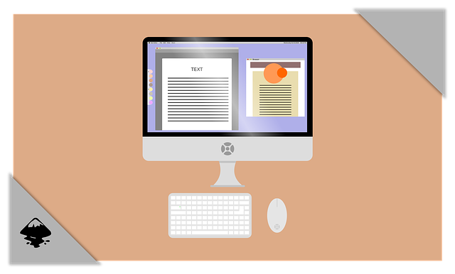

We believe security software like Whonix needs to remain Open Source and independent. Would you help sustain and grow the project? Learn more about our 14 year success story and maybe DONATE!
Whonix-Workstation Security

This page is targeted at users who wish to improve the security of their Whonix-Workstation to become even more secure.
Introduction
 Whonix comes with many security
features. Whonix is Kicksecure hardened by default and also provides
extensive Documentation
including a System
Hardening Checklist. The more you know, the safer you can be.
Whonix comes with many security
features. Whonix is Kicksecure hardened by default and also provides
extensive Documentation
including a System
Hardening Checklist. The more you know, the safer you can be.
This page is targeted at users who wish to improve the security of their Whonix-Workstation for even greater protection.
 Tip: Whonix implementation examples are based on
Debian. To use a customized Whonix-Workstation VM based on other
operating systems, see here. For technical design notes, see here.
Tip: Whonix implementation examples are based on
Debian. To use a customized Whonix-Workstation VM based on other
operating systems, see here. For technical design notes, see here.
If the Whonix-Workstation (anon-whonix) VM is ever
compromised, the attacker has access to the data it contains, including
all credentials, browser data and passwords. The IP address is never
leaked since this requires a compromise of the
Whonix-Gateway™ (sys-whonix) VM, but this
information may still result in identity disclosure.
Non-Qubes-Whonix
Best practice is to:
- Keep a clean master copy of the Whonix-Workstation VM.
- Make snapshots / clones of the master copy.
- Only use the snapshots / clones for Internet activity.
- Periodically delete old snapshots / clones.
This way it is possible to 'rollback' -- use a new clean clone / snapshot VM -- after risky activity or if a system compromise is suspected. See the multiple VM Snapshots recommendation below.
Qubes-Whonix™
Best practice is to:
- Use Disposables for all Internet activity; or
- Periodically delete the Whonix-Workstation AppVM(s) and create fresh instances from the Whonix-Workstation Template.
AppArmor
It is recommended to enable the Whonix AppArmor profiles which are available for various applications that are run in either the Whonix-Gateway or Whonix-Workstation, such as Tor, Tor Browser, Thunderbird and others. The profiles are easy to apply and provide a considerable security benefit.
File Storage Location
 See File Storage Location.
See File Storage Location.
Firejail
 Firejail should be used with caution. While it can be used to restrict
Tor Browser, Firefox-ESR, VLC and other regularly used applications,
this comes with an increased fingerprinting
risk. Further, madaidan has noted: [1]
Firejail should be used with caution. While it can be used to restrict
Tor Browser, Firefox-ESR, VLC and other regularly used applications,
this comes with an increased fingerprinting
risk. Further, madaidan has noted: [1]
Firejail is another common sandboxing technology however, it is also insufficient. Firejail worsens security by acting as a privilege escalation hole -- Firejail requires being setuid, meaning that it executes with the privileges of the executable's owner which in this case, is the root user. This means that a vulnerability in Firejail can allow escalating to root privileges.
As such, great caution should be taken with setuid programs, but Firejail instead focuses more on usability and unessential features which adds significant attack surface and complexity to the code, resulting in numerous privilege escalation and sandbox escape vulnerabilities, many of which aren't particularly complicated.
Introduction
According to the Firejail project page: [2]
Firejail is a SUID program that reduces the risk of security breaches by restricting the running environment of untrusted applications using Linux namespaces and seccomp-bpf. It allows a process and all its descendants to have their own private view of the globally shared kernel resources, such as the network stack, process table, mount table.
Written in C with virtually no dependencies, the software runs on any Linux computer with a 3.x kernel version or newer. The sandbox is lightweight, the overhead is low. There are no complicated configuration files to edit, no socket connections open, no daemons running in the background. All security features are implemented directly in Linux kernel and available on any Linux computer. The program is released under GPL v2 license.
Firejail has built-in profiles for a large number of popular Linux programs, including many which are used in Whonix. A small sample of the 100+ profiles includes: Chromium, CryptoCat, Thunar, Evince, Firefox, HexChat, LibreOffice, Okular, Thunderbird, Transmission, VirtualBox, VLC and wget. [3]
Launch Firejailed Applications
 In Qubes-Whonix, create a new
Whonix-Workstation AppVM based on any modified, cloned template(s)
before running any applications. Never launch applications in the
Whonix-Workstation Template.
In Qubes-Whonix, create a new
Whonix-Workstation AppVM based on any modified, cloned template(s)
before running any applications. Never launch applications in the
Whonix-Workstation Template.
To run sandboxed applications, simply prefix the program command with "firejail" in a terminal. For example:
firejail evince firejail vlc
For Tor Browser see Tor Browser Hardening instead.
To confirm an application is sandboxed, open a terminal and run.
firejail --tree
Additional Firejail Options
The full list of Firejail command line options can be found in the official
documentation. Alternatively, run the following terminal command in
Whonix-Workstation (anon-whonix).
man firejail
Firejail has a host of additional security features. For instance, VLC could be run while blocking access to the Internet as follows.
firejail --net=none vlc
Similarly, the following commands would run VLC with seccomp restrictions and debug output. [4]
firejail --debug vlc
For a further technical discussion of Firejail containment options, see here. To build a customized Firejail profile for other applications, follow these steps.
Firejail Firefox-ESR in Qubes Debian AppVM
 Warning: Do not use Firefox-ESR in a Whonix template!
It is easily fingerprinted and is less secure than Tor Browser.
Warning: Do not use Firefox-ESR in a Whonix template!
It is easily fingerprinted and is less secure than Tor Browser.
It is recommended to clone the Debian Template before proceeding, as a number of dependencies are installed:
- In a Debian AppVM, launch a firejailed Firefox-ESR application.
- Confirm Firefox-ESR is sandboxed:
- firejail --tree
The output should confirm Firefox-ESR is now running in a firejail container.
XXXX:user:firejail /usr/lib/firefox-esr/firefox-esr
Network Adapters
Add a Host-Only Networking Adapter / SSH into Whonix-Workstation
If accessing the Whonix-Workstation via SSH, some users may consider something dangerous - adding a second network adapter with host-only networking.
 Warning: Never add another network adapter in this
manner! It is also potentially dangerous if any other VMs are running
except the Whonix-Workstation. The reason is that it will expose the MAC
address of the host to the Whonix-Workstation.
Warning: Never add another network adapter in this
manner! It is also potentially dangerous if any other VMs are running
except the Whonix-Workstation. The reason is that it will expose the MAC
address of the host to the Whonix-Workstation.
The VMware host-only warning regarding routing and connection sharing may equally apply to Whonix: [5]
If you install the proper routing or proxy software on your host computer, you can establish a connection between the host virtual Ethernet adapter and a physical network adapter on the host computer. This allows you, for example, to connect the virtual machine to a Token Ring or other non-Ethernet network.
On a Windows 2000, Windows XP or Windows Server 2003 host computer, you can use host-only networking in combination with the Internet connection sharing feature in Windows to allow a virtual machine to use the host's dial-up networking adapter or other connection to the Internet. See your Windows documentation for details on configuring Internet connection sharing.
If it is necessary to SSH or VNC into Whonix-Workstation, then use one of these recommended methods:
- It is safest to do this from another Whonix-Workstation. When using VMs, they can see each other if they are within the same virtual LAN. When using Physical Isolation, VMs can see each other if they are within the same LAN.
- Alternatively, run the services using Onion Services and access them through another Whonix-Workstation.
The following methods are not recommended, since they risk weakening isolation between the host and Whonix-Workstation:
- Another alternative is to run the services using Onion Services and access them from the host using ordinary torification methods.
- A final method is to SSH from the host into Whonix-Gateway (see File Transfer for instructions) and then SSH from there into Whonix-Workstation.
Add a NAT Adapter / Updates without Tor
 Warning: Anonymity is compromised if another NAT
network adapter is added to the Whonix-Workstation.
Warning: Anonymity is compromised if another NAT
network adapter is added to the Whonix-Workstation.
If this advice is disregarded, then a user's identity is leaked if/when infection occurs. Therefore, it is strongly recommended to always update over the Tor network. Although Tor updating is slow by comparison, it prevents inadvertent leaks.
VM Snapshots
 Use VM snapshots..
Use VM snapshots..
Regular clean snapshots or clones of the master VM should be made for activities that require anonymity. Particular care must be taken that clean and unclean states are never mixed up!
Footnotes
- https://madaidans-insecurities.github.io/linux.html#firejail
- https://firejail.wordpress.com/
- https://github.com/netblue30/firejail/tree/master/etc
- Preliminary tests of other security features reveals they are not yet functional in Whonix, for instance --apparmor, --private, and --overlay-tmpfs. If the user does not specify a path to a specific profile when running Firejail, it will search for any relevant profile automatically. If a specific profile is not located, a default profile will be used.
- https://www.vmware.com/support/ws4/doc/network_host_ws.html
Categories: Documentation